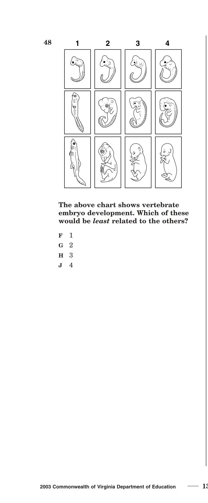

- Organisms classified by structural/biochemical characteristics
- Binomial nomenclature (genus + species)
- Amino acid/DNA sequence comparisons
- Hierarchical classification system
- Fossil record interpretation for classification
- Interpret cladograms/phylogenetic trees
- Embryonic stage similarities across animals
- Shared derived characteristics
- Archaea: prokaryotic, extremophiles
- Bacteria: prokaryotic, most common
- Eukarya: eukaryotic (protists, fungi, plants, animals)
- Six kingdoms with key characteristics
- Eukarya diversity: protists, fungi, plants, animals
- Classification adapts to new scientific discoveries
| Term | One-Line Definition |
|---|---|
| Taxonomy | The science of classifying and naming organisms |
| Binomial Nomenclature | Two-word naming system: Genus species (e.g., Homo sapiens) |
| Genus | Classification group above species; first word of scientific name (capitalized) |
| Species | Most specific classification level; organisms that can breed and produce fertile offspring |
| Domain | Broadest classification level: Archaea, Bacteria, or Eukarya |
| Kingdom | Second broadest level: Archaebacteria, Eubacteria, Protista, Fungi, Plantae, Animalia |
| Phylum | Major division within a kingdom based on body plan |
| Cladogram | Branching diagram showing evolutionary relationships based on shared derived traits |
| Phylogenetic Tree | Diagram showing evolutionary history and relationships of organisms |
| Common Ancestor | An organism from which two or more species have evolved |
| Fossil Record | Collection of all known fossils; provides evidence of past life and evolutionary change |
| Embryology | Study of embryo development; similar stages suggest evolutionary relationship |
| Archaea | Domain of prokaryotes; extremophiles (hot springs, salt lakes, deep-sea vents) |
| Bacteria | Domain of prokaryotes; most diverse and abundant; includes pathogens and decomposers |
| Eukarya | Domain of eukaryotes; includes protists, fungi, plants, and animals |
| Protist | Mostly unicellular eukaryotes; diverse group (amoeba, paramecium, algae) |
| Fungi | Eukaryotes with cell walls; heterotrophs that absorb nutrients (mushrooms, yeast, mold) |
| Plantae | Multicellular eukaryotes; autotrophs with cell walls; photosynthesis |
| Animalia | Multicellular eukaryotes; heterotrophs; no cell wall; mobile at some life stage |
| Dichotomous Key | Step-by-step tool using paired choices to identify an organism |
| Prokaryote | Cell without a membrane-bound nucleus (Archaea and Bacteria) |
| Eukaryote | Cell with a membrane-bound nucleus and organelles |
- A1 question
- BAbout 6 questions
- CAbout 12 questions
- D20 questions
- AInterpreting cladograms to determine which organisms are most closely related
- BDrawing every organism in each kingdom
- CMemorizing the Latin names of 100 species
- DCalculating the age of fossils using math
Answer honestly — right or wrong, these help Mr. England see where you're starting.
- AOrder
- BGenus
- CPhylum
- DSpecies
- APlant
- BAnimal
- CBacteria
- DFungi
- Agroup organisms that live in the same habitat
- Bcan incorporate new scientific discoveries
- Ccan predict the discovery of new species
- Dapply only to organisms alive today
Taxonomy is the science of classifying, naming, and organizing living things into groups based on shared characteristics. With millions of species on Earth, we need a systematic way to organize them so scientists worldwide can communicate clearly about specific organisms.
Organisms are arranged in a hierarchy from broadest (most general) to most specific:
Domain → Kingdom → Phylum → Class → Order → Family → Genus → Species
Binomial nomenclature is the two-word naming system developed by Carolus Linnaeus. Every organism has a unique scientific name made of two parts:
| Part | Rule | Example |
|---|---|---|
| Genus (first word) | Always CAPITALIZED | Homo |
| Species (second word) | Always lowercase | sapiens |
| Full name | Italicized (or underlined) | Homo sapiens |
The biological definition of a species is a group of organisms that can breed with each other and produce fertile offspring. A horse and a donkey can breed, but their offspring (a mule) is infertile — so horses and donkeys are different species.
Modern classification doesn't just look at physical appearance — it also compares DNA sequences, amino acid sequences in proteins, and other biochemical data. Organisms with very similar DNA or protein sequences are more closely related. For example, humans and chimpanzees share ~98% of their DNA, indicating a recent common ancestor. The SOL may show you amino acid sequences for several organisms and ask which is most similar to an unknown species.
The VDOE framework emphasizes that classification systems change as new evidence emerges. When DNA analysis reveals that two organisms previously grouped together are actually not closely related, scientists reclassify them. This is the nature of science — knowledge evolves with new discoveries and technology.
(2005-11) Escherichia coli is the scientific name of a bacterium. What category is "Escherichia"?
- AAnimals that can breed and produce fertile offspring
- BProtists that are the same shape
- CPlants with flowers attracting the same pollinators
- DMushrooms that are the same color
- Aphylum
- Bspecies
- Corder
- Dgenus
- Athe longest amino acid sequence
- Bthe shortest amino acid sequence
- Can identical number of amino acids
- Dthe most similar amino acid sequence
- Agroup organisms in the same habitat
- Bcan incorporate new scientific discoveries
- Ccan predict new species discoveries
- Dapply only to organisms alive today
A cladogram (or phylogenetic tree) is a branching diagram that shows the evolutionary relationships among organisms. Each branching point represents a common ancestor — the organism from which the branches evolved. Organisms that share a MORE RECENT branching point are MORE CLOSELY RELATED than organisms that diverged earlier.
How to read a cladogram:
- Each branch point = a common ancestor where two lineages split
- Organisms on nearby branches (sharing a recent split) = closely related
- Organisms on distant branches (splitting long ago) = distantly related
- Shared derived characteristics (traits that evolved in the common ancestor) are marked on branches
- The MORE shared traits two organisms have on the cladogram, the more closely related they are
The fossil record provides a time-ordered history of life on Earth. By examining fossils, scientists can:
- Compare structural characteristics of extinct organisms with living ones
- Track how species have changed over time
- Identify patterns of diversity, extinction, and change
- Infer evolutionary relationships between extinct and living species
The VDOE framework states you should be able to "analyze and interpret data for patterns in the fossil record that document the existence, diversity, extinction, and change of life forms throughout the history of life on Earth."
Embryology is the study of how organisms develop from a fertilized egg (zygote) through embryo stages. A key finding: many different species show remarkably similar embryonic stages, even though the adult forms look completely different. For example, fish, chicken, pig, and human embryos all develop gill slits, tails, and similar body segments early in development.
These similarities suggest that these organisms share a common ancestor and that the same developmental genes are active in the early embryonic stages. The more similar the embryonic stages, the more closely related the organisms are. This is powerful evidence for evolutionary relationships.
(2001-29) According to a chart, the insects most closely related are —
- Acnidarians
- Bchordates
- Cannelids
- Dsponges
- ACell wall
- BMitochondria
- CDNA
- DNucleus
- Areptile
- Bamphibian
- Cinvertebrate
- Dmammal
- Aan elongated body
- Blegs
- Cantennae
- Djointed appendages
The broadest level of classification divides all life into three domains:
| Domain | Cell Type | Key Characteristics | Examples |
|---|---|---|---|
| Archaea | Prokaryotic | Often extremophiles; unique cell membrane chemistry; no peptidoglycan in cell wall | Methanogens, halophiles, thermophiles |
| Bacteria | Prokaryotic | Most diverse and abundant; peptidoglycan in cell wall; includes pathogens and decomposers | E. coli, Streptococcus, cyanobacteria |
| Eukarya | Eukaryotic | Membrane-bound nucleus and organelles; includes all complex life | Protists, fungi, plants, animals |
The key distinction for domains: Archaea and Bacteria are both prokaryotic, but they have different cell membrane chemistry and RNA sequences. These molecular differences are significant enough to place them in separate domains.
This is the most important table in BIO.6. Memorize these characteristics:
| Kingdom | Domain | Cell Type | Cells | Cell Wall? | Nutrition | Examples |
|---|---|---|---|---|---|---|
| Archaebacteria | Archaea | Prokaryotic | Unicellular | Yes (no peptidoglycan) | Auto or heterotroph | Methanogens, thermophiles |
| Eubacteria | Bacteria | Prokaryotic | Unicellular | Yes (peptidoglycan) | Auto or heterotroph | E. coli, Streptococcus |
| Protista | Eukarya | Eukaryotic | Mostly unicellular | Some have | Auto or heterotroph | Amoeba, paramecium, algae |
| Fungi | Eukarya | Eukaryotic | Uni or multicellular | Yes (chitin) | Heterotroph (absorb) | Mushroom, yeast, mold |
| Plantae | Eukarya | Eukaryotic | Multicellular | Yes (cellulose) | Autotroph (photosynthesis) | Mosses, ferns, trees, flowers |
| Animalia | Eukarya | Eukaryotic | Multicellular | NO | Heterotroph (ingest) | Sponges, insects, mammals |
(2005-32) Multicellular, no photosynthesis, absorbs nutrients, eukaryotic cells with cell walls. Which kingdom?
- AJellyfish
- BStarfish
- CSponge
- DSea urchin
- APlant
- BAnimal
- CBacteria
- DFungi
- AParamecium
- BSea anemone
- CJellyfish
- DSponge
- Achunk feeder
- Bdecomposer
- Cfilter feeder
- Dgrazer
Protists are the "everything else" kingdom — they are eukaryotic organisms that don't fit neatly into fungi, plants, or animals. Most are unicellular, though some (like algae) are multicellular. Protists are incredibly diverse: some are autotrophs (algae photosynthesize like plants), some are heterotrophs (amoeba engulf food like animals), and some are decomposers (like slime molds).
Examples: amoeba (moves with pseudopods), paramecium (moves with cilia), euglena (has both chloroplasts and a flagellum), algae (photosynthetic, can be unicellular or multicellular).
Fungi are eukaryotic organisms with cell walls made of chitin (not cellulose like plants). They are heterotrophs that obtain nutrients by absorption — they secrete digestive enzymes onto organic material and absorb the dissolved nutrients. Most fungi are decomposers, breaking down dead organisms and returning nutrients to the soil.
Fungi can be unicellular (yeast) or multicellular (mushrooms, molds). Multicellular fungi grow as networks of thread-like structures called hyphae. Fungi reproduce using spores.
Plants are multicellular eukaryotes with cell walls made of cellulose. They are autotrophs that produce food through photosynthesis. Plant cells are organized into tissues. The major plant groups include:
| Group | Key Feature | Examples |
|---|---|---|
| Mosses | No vascular tissue; must live in moist environments | Sphagnum, peat moss |
| Ferns | Vascular tissue but no seeds; reproduce with spores | Fiddleheads, tree ferns |
| Conifers (gymnosperms) | Seeds in cones; no flowers | Pine, spruce, fir |
| Flowering plants (angiosperms) | Seeds in fruits; have flowers | Roses, oak trees, grasses |
Animals are multicellular eukaryotes with NO cell wall. They are heterotrophs that obtain food by ingestion (eating). Animals are mobile during at least part of their life cycle. Animal cells are organized into tissues, organs, and organ systems.
Animals range from simple sponges (no true tissues) to complex mammals (multiple organ systems). Key animal phyla include invertebrates (sponges, cnidarians, worms, arthropods, mollusks, echinoderms) and vertebrates (fish, amphibians, reptiles, birds, mammals).
- Areptile
- Bamphibian
- Cinvertebrate
- Dmammal
- Afour-chambered hearts
- Bthree-chambered hearts
- Ctwo-chambered hearts
- Dno heart chambers
- Aare prokaryotic
- Buse photosynthesis
- Chave no cell walls
- Dabsorb nutrients from their environment
- AFlowering plants have roots; conifers don't
- BFlowering plants are autotrophs; conifers aren't
- CFlowering plants produce seeds inside fruits; conifers produce seeds in cones
- DFlowering plants have cell walls; conifers don't
Flip ALL 22 flashcards, then score 8/10 on the quiz to unlock the Practice Test.
Print for quick reference.
Domain → Kingdom → Phylum → Class → Order → Family → Genus → Species
Binomial nomenclature: Genus species (Genus capitalized, species lowercase, italicized). Species = can breed + fertile offspring. More shared DNA/amino acids = more closely related.
Cladograms: most recent branch point = most closely related. Fossils: compare extinct vs. living structures. Embryology: similar early development = common ancestor. DNA/Protein sequences: more similar = more related.
| Domain | Cell Type | Key Feature |
|---|---|---|
| Archaea | Prokaryotic | Extremophiles; no peptidoglycan |
| Bacteria | Prokaryotic | Most diverse; peptidoglycan walls |
| Eukarya | Eukaryotic | Membrane-bound nucleus |
| Kingdom | Cell | Wall? | Nutrition | Examples |
|---|---|---|---|---|
| Archaebacteria | Prokaryotic | Yes | Auto/Hetero | Methanogens |
| Eubacteria | Prokaryotic | Yes | Auto/Hetero | E. coli |
| Protista | Eukaryotic | Some | Auto/Hetero | Amoeba, algae |
| Fungi | Eukaryotic | Yes (chitin) | Hetero (absorb) | Mushroom |
| Plantae | Eukaryotic | Yes (cellulose) | Auto (photo.) | Trees, ferns |
| Animalia | Eukaryotic | NO | Hetero (ingest) | Insects, mammals |
Plants: mosses (no vascular) → ferns (vascular, spores) → conifers (seeds in cones) → flowering (seeds in fruits). Classification adapts to new discoveries (BIO.6f).
BIO.6 Practice Test
Released Virginia SOL questions —

- Adevelops gill slits first
- Bhas the most similar early stages to the others
- Cshows the most differences from the others at every stage
- Ddevelops a tail last
- AArchaea
- BBacteria
- CEukarya
- DProtista
- Athe longest sequence
- Bthe shortest sequence
- Can identical number of amino acids
- Dthe most similar sequence
- ADiscovery of a new related species
- BCollection of seeds from each
- CAnalysis of photosynthesis
- DAnalysis of DNA sequence of each species
- AGill slits only
- BLimbs and external ears
- CTails only
- DFins and scales
- Aelongated body
- Blegs
- Cantennae
- Djointed appendages
- ACell wall
- BMitochondria
- CDNA
- DNucleus
- AJellyfish
- BStarfish
- CSponge
- DSea urchin
- APlant
- BAnimal
- CBacteria
- DFungi
- Areptile
- Bamphibian
- Cinvertebrate
- Dmammal
- AOnly Bacteria have DNA
- BOnly Archaea can reproduce
- CBacteria are multicellular, Archaea are not
- DDifferences in cell membrane chemistry and RNA sequences
- Achunk feeder
- Bdecomposer
- Cfilter feeder
- Dgrazer
- AParamecium
- BSea anemone
- CJellyfish
- DSponge
- Aignore the DNA evidence and keep the current classification
- Breclassify them into the same genus based on the new evidence
- Ccreate a new kingdom for both organisms
- Dremove both organisms from the classification system
- Afour-chambered hearts
- Bthree-chambered hearts
- Ctwo-chambered hearts
- Dopen circulatory systems
- Aare prokaryotic
- Bphotosynthesize
- Clack cell walls
- Dabsorb nutrients instead of photosynthesizing
- AFlowering plants have roots
- BFlowering plants are autotrophs
- CFlowering plants produce seeds in fruits; conifers in cones
- DFlowering plants have cell walls
- Aidentical species
- Bmost closely related
- Cleast closely related
- Din the same kingdom but different phylum
- Alive in similar environments
- Beat the same food
- Cshare a common ancestor
- Dwill look similar as adults
- Aability to reproduce
- Bpresence of DNA
- Cneed for energy
- Dcell membrane chemistry and RNA sequences
⏳ Complete the Practice Test to see your results.